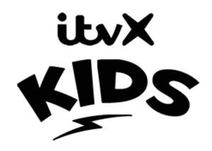

Trade Mark Journal No.2025/026 27 June 2025
UK00004217467 11 June 2025 (9,35,38,41)
Mark 1

Mark 2
- Class 9
- Sound and video recordings; recorded television and radio programmes; motion pictures; recorded programmes for broadcasting or other transmission on television, radio, mobile telephones and on PCs; interactive sound and video recordings; downloadable digital music, sounds, videos, images, text and information provided by a telecommunications network, by on-line delivery and by way of the Internet and the world-wide web or other communications network; CD-ROMs and DVDs; computer games; digital media and data streaming devices; electronic publications; downloadable media content, including video and films, television programmes, computer games, music, images and ring tones provided by internet, telephone line, cable wireless transmission, satellite or terrestrial broadcast service; podcasts (downloadable); computer software; downloadable mobile applications; computer and mobile application games software; computer programs and mobile application software for interactive television and for interactive games and quizzes; computer and mobile application quiz software; educational software; software for use in the fields of virtual reality, augmented reality, mixed reality, identity verification, online marketplaces and the creation of self-sovereign identity; software for the creation, production and modification of digital animated and non-animated designs and characters, avatars, digital overlays and skins for access and use in online environments, virtual online environments, and extended reality virtual environments; downloadable software, namely virtual goods, featuring footwear, clothing, headwear, eyewear, swimwear, bags, art, toys, games, cosmetics, toiletries, perfumes, water bottles and towels for use online and in online virtual worlds; downloadable software, namely digital collectibles being downloadable virtual footwear, clothing, headwear, eyewear, swimwear, bags, art, toys, games, cosmetics, toiletries, perfumes, water bottles and towels, digital animated and non-animated designs and characters, avatars, digital overlays, and skins for use in virtual environments.
- Class 35
- Advertising and promotion services and information services relating thereto; television advertising; rental of advertising space; rental of advertising time on communication media; on-line advertising on a computer network and on mobile phones via mobile software applications; advertising and marketing services provided by means of social media; provision of online services to purchase advertising inventory and advertising space; production of advertising films; dissemination of advertising matter; maintaining, indexing and electronically distributing advertising material; providing advertising campaign management services in the nature of tracking, analysing, and reporting on consumer data, demographics, and consumer behavioural information, and consumer responses to advertisements and promotional materials; compilation, management, verification and manipulation of multiple datasets to inform, configure and select targeted and personal advertising; organization of events, exhibitions, trade fairs and fashion shows for commercial, promotional or advertising purposes; procurement services for others [purchasing goods and services for other businesses]; publicity services; sponsorship search; retail services relating to sound and video recordings and downloads, CD-ROMs and DVDs, downloadable computer software applications, computer game software, books, printed matter, clothing, headgear, footwear and electronic publications; the bringing together for the benefit of others a variety of goods namely sound and video recordings and downloads, CD-ROMs and DVDs, downloadable computer software applications, computer game software, books, printed matter, clothing, headgear, footwear and electronic publications, enabling customers to conveniently view and purchase those goods via an online retail website, downloadable and non-downloadable application software and downloadable and non-downloadable mobile application software, an interactive or digital television shopping channel, or by means of interactive television and/or telecommunications (including voice, telephony and/or transfer of digital information or data) and/or interactive digital media or within retail stores, or concessions within such stores, connected with one or more of the foregoing types of goods; online retail services connected with the sale of music-related products, namely musical recordings, musical CDs, musical DVDs, musical audio recordings, musical audio-visual recordings, musical video recordings, MP3 downloads, digital music recordings, digital audio-visual recording; online retail store services connected with the sale of streamed and downloadable pre-recorded electronic games; on-line searching and ordering service featuring movies, motion pictures, documentaries, films, television programs, graphics, animation and multimedia presentations, and other audio-visual works in the form of compact discs, DVDs, high density optical discs, digital downloads and direct digital transmission apparatus; providing an online marketplace via a website; advertising and marketing in the fields of computer software, the metaverse, augmented reality, virtual reality, mixed reality, non-fungible tokens (NFTs), self-sovereign identities and online gaming.
- Class 38
- Broadcasting services; communication services; television broadcasting services; video, audio and television streaming services; broadcasting, transmission, streaming, reception and other dissemination of television programmes, films, computer games, audio, visual, still and moving images, text, data, digital information and multimedia content whether in real or delayed time; audio, video and multimedia broadcasting and transmission via satellite, DTT, cable, digital, the Internet and other communications networks; video on demand, near on demand and pay-per-view telecommunications, communication, broadcast and transmission services; telecommunications services dedicated to retailing goods and services through interactive communications with customers; providing internet chatrooms and online forums; webcasting services; podcasting services; interactive television services being telecommunications, communications, broadcasting and transmission services; broadcasting, communication and transmission of interactive television, interactive games, interactive news, interactive sport, interactive entertainment, interactive television viewing guides, interactive programme recordal services and interactive competitions; providing interactive television viewers (including those watching on their mobile telephones or PCs) with access to information, data, graphics, audio and audio-visual content from Internet websites or portals; subscription television broadcasting services; information and advisory services relating to any of the aforesaid services.
- Class 41
- Entertainment; publishing services (including electronic publishing services); education; entertainment and education services in the form of television programmes, radio, cable, satellite and Internet programmes, webcasts, podcasts and musical performances; entertainment and education services by means of radio, television, telephony, the Internet, on-line databases and through the medium of television; entertainment services in the form of virtual reality and interactive game services; entertainment services in the form of providing an online environment featuring streaming of entertainment content and live streaming of entertainment events; virtual and augmented reality online gaming services; production of radio and television programmes; production of shows (live and recorded); production of films; production of music; production of videos, videotapes and DVDs; production of audio, visual and audio visual material; theatre productions; production of shows; development of formats for television programmes and films; presentation, provision and distribution of television, radio, cable and Internet programmes and of music, films, shows, sound recordings, video recordings and DVDs; provision of radio programmes, television programmes, films, audio and visual material or motion pictures online (not downloadable); production, presentation and distribution of interactive television, interactive games, interactive entertainment and interactive competitions; provision of television programmes, films and videos via video on demand and near on demand services; distribution and exhibition of radio programmes, television programmes, films, motion pictures, audio and visual material, DVDs or pre-recorded video discs; hire, leasing or rental of radio programmes, television programmes, films, motion pictures, audio and visual material, DVDs or pre-recorded video discs; viewing guide services; viewing guide services facilitating the recordal and fixed term rental of programmes and movies; organisation of entertainment; organisation, production, presentation, provision and hosting of competitions, contests, games, quizzes, game shows, exhibitions, shows, roadshows, festivals, staged events, concerts, live performances, studio entertainment, audience participation events, awards ceremonies, sporting activities and sporting competitions; providing non downloadable games, video games and digital collectibles via an online forum or website; entertainment services, namely providing non-downloadable virtual footwear, clothing, headwear, eyewear, swimwear, bags, art, toys, games, cosmetics, toiletries, perfumes, water bottles and towels, digital animated and non-animated designs and characters, avatars, digital overlays, and skins for use in virtual environments; organisation, production and presentation of events for educational, cultural or entertainment purposes; demonstration services for cultural, training, educational & entertainment purposes; educational services relating to entertainment; organization, arrangement and hosting of conferences, seminars, symposiums or workshops; news, current affairs, sports and educational information and reporting services; factual information services relating to television and radio programmes, news and sport; publication and provision of electronic publications and online publications, including electronic books, newspapers, magazines (periodicals), comics, journals (publications), books, user manuals, instructional and teaching materials; presentation of films; ticket reservation services relating to entertainment; pay to play games services; educational or entertainment games played online; ring tones (not downloadable) provided via the Internet; information and advisory services relating to any of the aforesaid services.
ITV Rights Limited
Representative: ITV Studios Limited